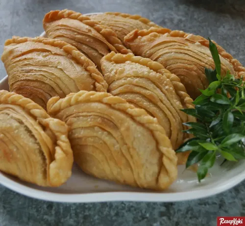

Curry Puff

Description
Easy potato spiral curry puff filled with aromatic potato and chicken filling. You can choose to deep fry or bake
the curry puff for a healthier version. Easy step-by-step on how to create the spiral patterns. If you are
looking for curry puff recipe that stays crispy for hours, this is it!
Ingredients
- 180 gr all-purpose flour
- 30 gr butter softened
- 70 gr lard or shortening
- 250 gr all-purpose flour
- 50 gr butter softened
- ½ tsp salt
- 1 Tbsp sugar
- 120 ml water
- 2 Tbsp cooking oil
- 350 gr potatoes peeled and cut into 1/2-inch cubes
- 200 gr boneless skinless chicken meat diced
- 100 gr mixed veggies thawed if frozen
- 1 large onion diced
- 2 Tbsp curry powder adjust to your preference
- 1 Tbsp chili powder adjust to your preference
- ¼ cup water or chicken broth
- ¼ tsp sugar
- Salt to taste
- 2 Tbsp all-purpose flour
- 2 hard-boiled eggs optional, cut into 10 portions
- Cooking oil
- 1 large egg beaten
- 1 tsp milk
Steps
- Prepare the filling:
- Heat skillet/wok with oil. Saute onion until soft, about 3-4 minutes. Add chicken pieces and stir fried
until they turn color. Add potatoes, curry powder, chili powder and continue to cook for about 5
minutes. Add water or chicken broth, cover with a lid and let it simmer for about 10 minutes until the
potatoes are soft. Uncover the lid and continue to cook until liquid has evaporated
- Sprinkle in the flour and continue to stir fry until the mixture sort of more "glue" together because of
the flour. It is easier to wrap it later. Have a taste and adjust seasoning as needed. Remove from the
heat and let it cools down completely before wrapping
- Prepare the oil and water dough:
- For water dough: Mix flour, salt, sugar in a mixing bowl and stir to mix thoroughly. Rub the butter into
the flour to form coarse crumbs. Add the water and gradually mix into a dough. Wrap it up with a plastic
wrap while you prepare the oil dough
- For oil dough: Mix the flour with butter and continue to knead until you can form a dough. If it feels
dry, add more butter/lard/shortening so it can come into a smooth pliable dough
- Rest both doughs for 30 minutes to 1 hour
- Put water and oil doughs together:
- Get the water dough and flatten into a disc. Place the oil dough on top and wrap the water dough around
it. Wrap the whole thing up and let it rest for 15 minutes before rolling the dough out. Don't skip this
resting step
- Shaping:
- Portion the filling into 20 equal portions when you are ready to wrap the curry puffs
- Lightly dust your working surface with a bit of flour. Get the water dough and roll it out into about 14
x 10 inch rectangle. Then roll it up with your fingers, starting from the side near you to the other
side (like a Swiss roll)
- Then rotate the dough 90 degrees to the left or right (doesn't matter). Use a rolling pin to roll it out
again to a rectangle. Use your fingers to roll it up again starting from the side near you to the other
side like a Swiss roll again. Wrap it up tightly and rest for 15 minutes
- Cut the dough into 20 equal portions. Keep them covered and work with one dough at a time
- Wrapping:
- Lightly dust your working surface with a bit of flour. Flatten the cut dough with your palm and then use
a rolling pin to roll it out into a circle, about 5-6 inches in diameter. Place one portion of the
filling and egg in the middle (if using)
- Fold the dough into half to create a half circle and then seal the edge by pinching and folding up (you
can watch the video). Repeat with the rest of the doughs and fillings
- Deep fry curry puffs:
- Heat about 4-inches of oil for deep-frying over medium heat and fry in small batches until they are
golden brown. Make sure there is enough oil and also to move them around a little bit as they are frying
so the curry puff won't be touching the bottom of the pot as it will create a dark burn spot
- Remove from the oil to an absorbent paper towel. Keep them warm in the oven at 200 F if you like. The
fried curry puffs stay crispy for hours at room temperature too
- Air-fryer curry puffs:
- Preheat air fryer at 375 F for 10 minutes. Brush the curry puffs with some egg wash. Place the curry
puffs in a single layer and bake for 15-20 minutes or until golden brown
- Baked curry puffs in the oven:
- Preheat oven at 375 F. Line a baking sheet with a parchment paper. Brush the curry puffs with some egg
wash. Place the curry puffs on the baking sheet and bake for 25-30 minutes or until golden brown